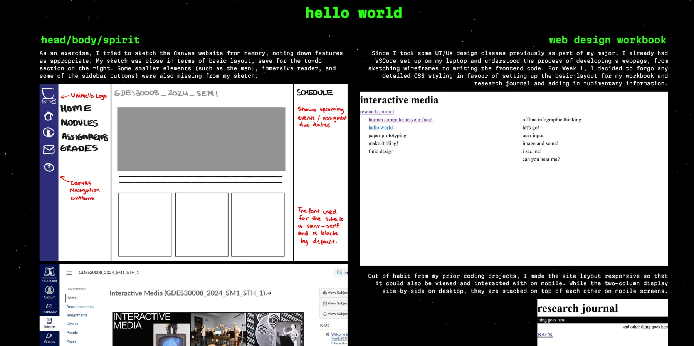

Following the feedback from Project 2A, I modified my workbook to improve upon the page design, as well as incorporate p5.js elements in order to add to the sci-fi theme. Realising that the two-column layout caused the pages to appear too cramped, I increased the margin on my page elements and reverted to a centered one-column layout for my workbook entries. I also modified the text on the landing page to fall more in line with the spaceship concept.
Below is a before-and-after comparison of the workbook entry layout:
Due to its wide array of features, I decided to use the p5play library alongside the base p5.js and p5.sound libraries. I wanted to focus on the spaceship cockpit aspect of the home page, adding interactive elements that mimic informational screens a cockpit display would have. This would utilize the knowledge I have accumulated through my experimentation. Before implementing code, I sketched the layout of the planned p5.js elements:
The most difficult part to implement was the spaceship lasers. I did not want them to exist for too long on the screen, so I used the "life" attribute in p5play to remove the laser beams after a certain number of frames.
I ultimately decided against including the p5.js interactivity on mobile, as the cockpit layout was intended for desktop screens. A media query was used to hide the p5.js canvas on mobile screen sizes.